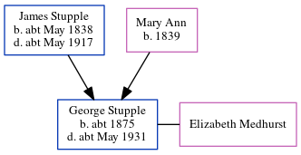

George Edward Stupple c1875 - c1931
[ Home ] | [ Calendar ] | [ Surnames Index ] | [ Census Index ] | [ Family History ]A house painter and the child of James Stupple (a mariner) and Mary Ann, George Stupple, the first cousin three-times-removed on the mother's side of Nigel Horne, was born in Herne Bay, Kent, England c. 18751,2 and baptized there on Aug 1, 1875. He married Elizabeth Medhurst there at Christ Church on Oct 16, 1898.
During his life, he was living at Victoria Terrace, Herne, Kent, England in 18811 and on Apr 3, 18811; at 10 Victoria Terrace in Herne Bay in 1891; and at Alfred Cottages, Grand Drive in Herne Bay on Apr 2, 19114.
He died c. May 1931 in Blean, Kent, England3.
Parents
- James was born c. May 1838
- Mary Ann was born in 1839
Citations
- 1881 England, Wales & Scotland Census - Findmypast (was age 5 and the son of the head of the household)
- England & Wales births 1837-2006 - Findmypast
- England & Wales deaths 1837-2007 - Findmypast
- 1911 Census for England & Wales - Findmypast (was age 36 and the head of the household)
Media
Canterbury Marriages Transcription - GBPRS-CANT-M-97074142-1
England & Wales marriages 1837-2008 - BMD/M/1898/4/AZ/000374/097
1911 Census for England & Wales - GBC/1911/RG14/04352/0159/1
England & Wales deaths 1837-2007 - BMD/D/1931/2/AZ/000874/143
Family Tree
Generated by ged2site. Last updated on Jun 11, 2024